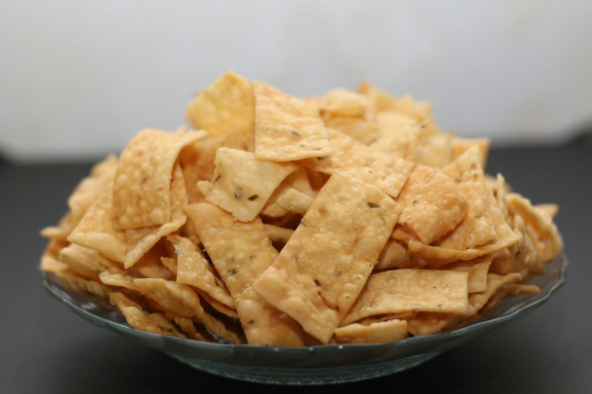
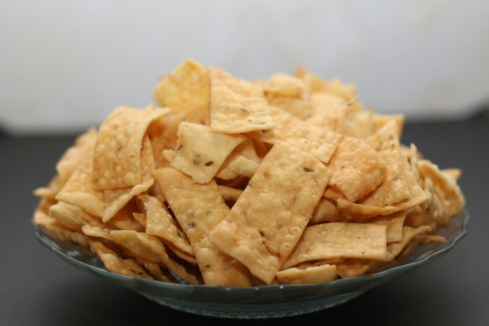
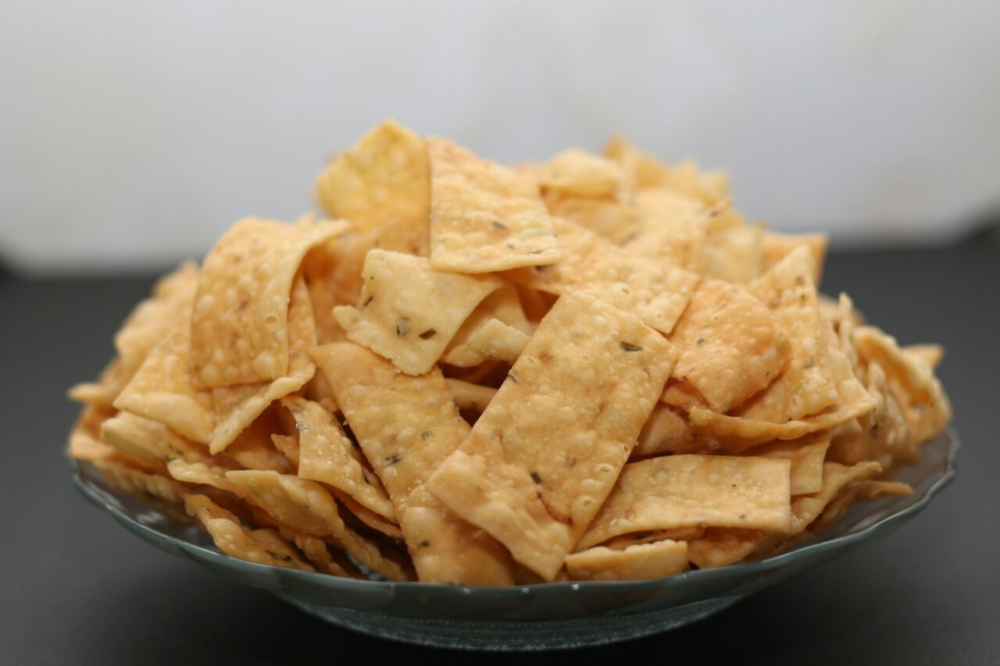

Preview Kue
 

Toko Kue "Mamah Suy" adalah toko kue yang berlokasi di Kp. cikahuripan. Toko kue "Mamah Suy" cukup terkenal di Kp. Cikahuripan. Banyak orang di kampung sering membeli kue ke toko "Mamah Suy" karena terkenal atas kenikmatan dari kue yang dibuat oleh Mamah Suy. Nama toko "Mamah Suy" sendiri merupakan singkatan dari nama pemilik toko itu sendiri yaitu "Suyanah".

Produk yang dihasilkan oleh toko ini memiliki kualitas yang cukup tinggi.
Harga produk yang dijual oleh toko ini sangat terjangkau.
Produk yang dibuat oleh toko ini dijaga kebersihan bahan maupun pembuatnya sendiri.
Sudah banyak respon positif dari para konsumen pada produk yang dibuat oleh toko ini.